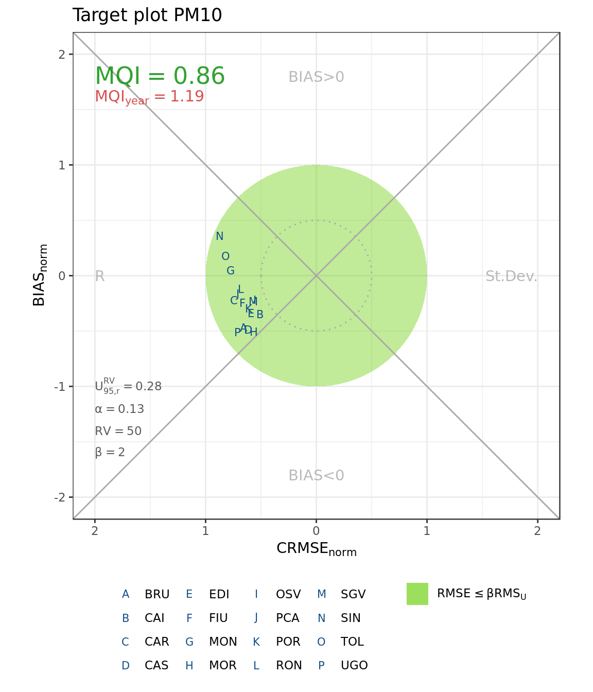
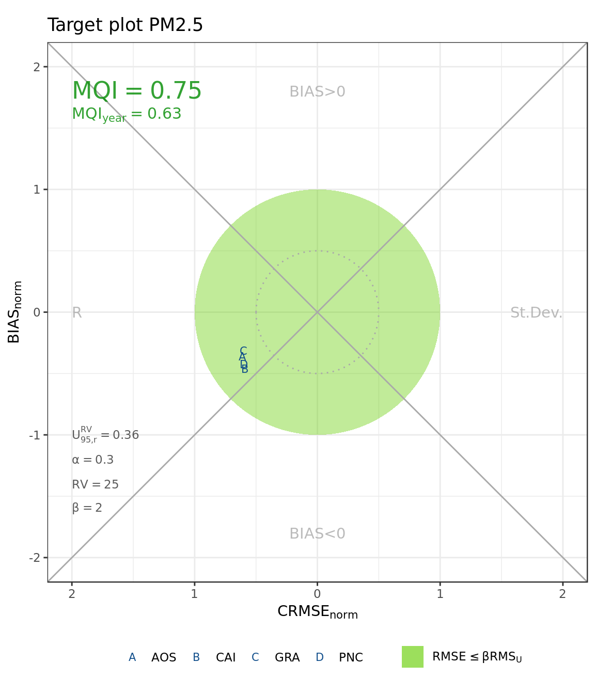
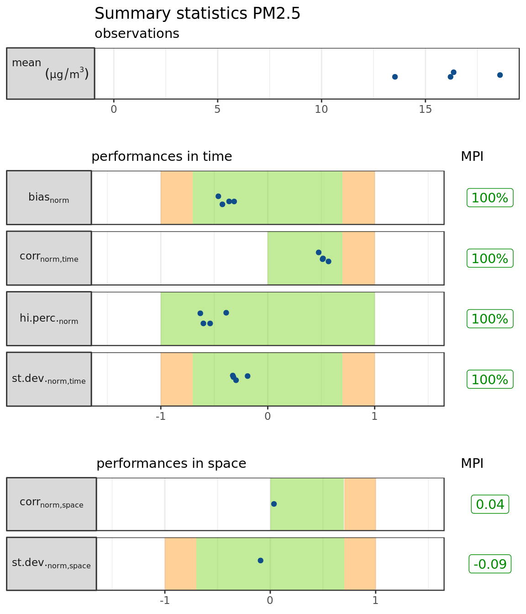

Air quality model benchmarking with dartle
Giovanni Bonafè
2019-05-06
dartle-usage.RmdThe R package dartle is a toolkit of functions for air quality model benchmarking, inspired by the DELTA tool (JRC-IES) and the work of the FAIRMODE WP1.
For dartle to work, you need R (version 2.10 or higher) and the packages stats, dplyr, RcppRoll, data.table and ggplot2. To install dartle downloading it from GitHub, use the package devtools, as follows:
require("devtools")
devtools::install_github("jobonaf/dartle")Once installed, you can load it
library("dartle")Datasets
The package includes some datasets:
| Item | Title |
|---|---|
| mod.data (mod_data) | Forecasted concentrations |
| obs.no2 (obs_data) | Observed NO2 concentrations |
| obs.o3 (obs_data) | Observed ozone concentrations |
| obs.pm10 (obs_data) | Observed PM10 concentrations |
| obs.pm25 (obs_data) | Observed PM2.5 concentrations |
Let’s have a look to the forecasted data (ignore EmissionTime, Intercept and Slope)
| Time | Var | Point | Value | EmissionTime | Intercept | Slope |
|---|---|---|---|---|---|---|
| 2016-07-16 00:00:00 | c_PM10 | AOS | 4.1002 | 2016-07-14 00:00:00 | 0 | 1 |
| 2016-07-16 01:00:00 | c_PM10 | AOS | 3.6414 | 2016-07-14 01:00:00 | 0 | 1 |
| 2016-07-16 02:00:00 | c_PM10 | AOS | 6.9352 | 2016-07-14 02:00:00 | 0 | 1 |
| 2016-07-16 03:00:00 | c_PM10 | AOS | 6.6799 | 2016-07-14 03:00:00 | 0 | 1 |
| 2016-07-16 04:00:00 | c_PM10 | AOS | 6.0060 | 2016-07-14 04:00:00 | 0 | 1 |
| 2016-07-16 05:00:00 | c_PM10 | AOS | 3.5812 | 2016-07-14 05:00:00 | 0 | 1 |
Let’s see where and when have been observed the highest concentrations. Of PM10
| Time | ID | Station | Value | ZoneType | StationType | Lat | Lon |
|---|---|---|---|---|---|---|---|
| 2016-01-06 | POR | Porcia | 181.0366 | SBR | BKG | 45.95767 | 12.61871 |
| 2016-01-29 | BRU | Brugnera | 176.6999 | SBR | BKG | 45.89865 | 12.53631 |
| 2016-01-30 | POR | Porcia | 174.4575 | SBR | BKG | 45.95767 | 12.61871 |
| 2016-01-29 | POR | Porcia | 174.0614 | SBR | BKG | 45.95767 | 12.61871 |
| 2016-01-30 | BRU | Brugnera | 168.9616 | SBR | BKG | 45.89865 | 12.53631 |
| 2016-01-29 | EDI | Edison (via Marconi) - Torviscosa | 164.8445 | SBR | BKG | 45.82199 | 13.27140 |
PM2.5
| Time | ID | Station | Value | ZoneType | StationType | Lat | Lon |
|---|---|---|---|---|---|---|---|
| 2016-01-29 | CAI | via Cairoli - Udine | 119.2676 | URB | BKG | 46.06612 | 13.24069 |
| 2016-01-29 | LIB | piazza Libertà - Trieste | 116.6342 | URB | TRF | 45.65710 | 13.77210 |
| 2016-01-06 | PNC | Pordenone Centro | 112.0998 | URB | TRF | 45.96254 | 12.65595 |
| 2016-01-29 | MNF | Monfalcone A2A | 104.0998 | URB | IND | 45.80519 | 13.52206 |
| 2016-01-28 | LIB | piazza Libertà - Trieste | 103.6742 | URB | TRF | 45.65710 | 13.77210 |
| 2016-01-30 | LIB | piazza Libertà - Trieste | 102.5962 | URB | TRF | 45.65710 | 13.77210 |
NO2
| Time | ID | Station | Value | ZoneType | StationType | Lat | Lon |
|---|---|---|---|---|---|---|---|
| 2016-01-26 19:00:00 | BRU | Brugnera | 140.9989 | SBR | BKG | 45.89865 | 12.53631 |
| 2017-03-17 20:00:00 | PCA | p.zza Carlo Alberto | 139.1235 | URB | BKG | 45.64232 | 13.75605 |
| 2016-01-26 18:00:00 | BRU | Brugnera | 133.1246 | SBR | BKG | 45.89865 | 12.53631 |
| 2016-01-20 19:00:00 | BRU | Brugnera | 131.9033 | SBR | BKG | 45.89865 | 12.53631 |
| 2017-02-14 19:00:00 | BRU | Brugnera | 130.5135 | SBR | BKG | 45.89865 | 12.53631 |
| 2017-03-17 19:00:00 | PCA | p.zza Carlo Alberto | 129.2262 | URB | BKG | 45.64232 | 13.75605 |
and ozone
| Time | ID | Station | Value | ZoneType | StationType | Lat | Lon |
|---|---|---|---|---|---|---|---|
| 2016-05-28 13:00:00 | TOL | Tolmezzo | 176.2697 | URB | BKG | 46.40187 | 13.01098 |
| 2016-05-28 14:00:00 | TOL | Tolmezzo | 174.9796 | URB | BKG | 46.40187 | 13.01098 |
| 2016-05-27 18:00:00 | TOL | Tolmezzo | 174.5843 | URB | BKG | 46.40187 | 13.01098 |
| 2016-05-27 15:00:00 | TOL | Tolmezzo | 174.5339 | URB | BKG | 46.40187 | 13.01098 |
| 2016-06-30 13:00:00 | MOR | Morsano al Tagliamento | 173.4314 | SBR | BKG | 45.86824 | 12.93143 |
| 2016-06-30 15:00:00 | CAI | via Cairoli - Udine | 173.1446 | URB | BKG | 46.06612 | 13.24069 |
Note that for PM10, NO2 and ozone only background stations are provided, while obs.pm25 includes also traffic and industrial stations. All the data are from the Environmental Agency of Friuli Venezia Giulia region (Italy).
unique(obs.pm25$StationType)[1] “TRF” “BKG” “IND”
Target plots
To produce a target plot, we must arrange forecasted and observed data in the same data.frame. First, we extract PM10 forecasts with filter and calculate the daily averages with dMean
Then, we adjust the format of the observed dataset
So, observed and forecasted datasets can be meld in a single data.frame (Dat.pm10)
Dat.pm10 <- inner_join(Mod, Obs, by=c("Point", "Day"), suffix = c(".mod", ".obs"))Now Dat can be passed to the target_report function, to calculate some quality indicators
t_rep <- target_report(Dat.pm10, obs = "Value.obs", mod = "Value.mod",
point = "Point", pollutant = "PM10")Finally, t_rep (the output of the target_report function) is ready to be passed to the target_plot function
target_plot(t_rep)
The same processing for PM2.5:
Mod <- dMean(mod.data %>% filter(Var=="c_PM25"),
value = "Value", time = "Time", point = "Point")
Obs <- obs.pm25 %>% mutate(Day=format(Time,"%Y-%m-%d"), Point=ID)
Dat.pm25 <- inner_join(Mod, Obs, by=c("Point", "Day"), suffix = c(".mod", ".obs"))
t_rep <- target_report(Dat.pm25, obs = "Value.obs", mod = "Value.mod",
point = "Point", pollutant = "PM2.5")And the plot
target_plot(t_rep)
For NO2, the target plot is based on hourly data, therefore no daily average is performed
Mod <- mod.data %>% filter(Var=="c_NO2") %>% mutate()
Obs <- obs.no2 %>% rename(Point=ID)
Dat.no2 <- inner_join(Mod, Obs, by=c("Point", "Time"), suffix = c(".mod", ".obs"))
t_rep <- target_report(Dat.no2, obs = "Value.obs", mod = "Value.mod",
point = "Point", pollutant = "NO2")Note that the function target_report needs the argument pollutant because the parameters used to assess the measurements uncertainties are pollutant-dependent.
target_plot(t_rep)For ozone, we have to calculate daily maxima of the 8-hours running mean.
Mod <- dMaxAvg8h(mod.data %>% filter(Var=="c_O3"),
value = "Value", time = "Time", point = "Point")
Obs <- obs.o3 %>% rename(Point=ID)In this case, both observations and forecasts are provided as hourly averages in the datasets, so we need the function dMaxAvg8h again.
Obs <- dMaxAvg8h(Obs, value = "Value", time = "Time", point = "Point")
Dat.o3 <- inner_join(Mod, Obs, by=c("Point", "Day"), suffix = c(".mod", ".obs"))
t_rep <- target_report(Dat.o3, obs = "Value.obs", mod = "Value.mod",
point = "Point", pollutant = "O3")target_plot(t_rep)
Summary reports
s_rep <- summary_report(Dat.pm10, obs = "Value.obs", mod = "Value.mod",
point = "Point", pollutant = "PM10")
summary_plot(s_rep)s_rep <- summary_report(Dat.pm25, obs = "Value.obs", mod = "Value.mod",
point = "Point", pollutant = "PM2.5")
summary_plot(s_rep)
s_rep <- summary_report(Dat.no2, obs = "Value.obs", mod = "Value.mod",
point = "Point", pollutant = "NO2")
summary_plot(s_rep)s_rep <- summary_report(Dat.o3, obs = "Value.obs", mod = "Value.mod",
point = "Point", pollutant = "O3")
summary_plot(s_rep)